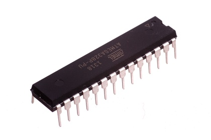
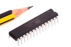

28 Pin DIP AtMega328P - IC328

Summary
Name: 28 Pin DIP AtMega328P
ID: ICIC-DI28-X-K328-01
Hex ID: IC328
WebPage: https://github.com/oomlout/oomlout-OOMP/wiki/ICIC-DI28-X-K328-01
Short URL: http://oom.lt/IC328
Revision History: https://github.com/oomlout/oomlout-OOMP/blob/master/parts/ICIC-DI28-X-K328-01/
| Type |
Size |
Color |
Description |
Index |
ICIC
|
DI28
28 Pin DIP |
X
|
K328
AtMega328P |
01
|
Images

About
This part is awaiting a description.
Common Uses
This part is commonly used as:
*Used as the Microcontroller in the Arduino UNO
Specifications
| Info |
Value |
| Size |
28 Pin DIP |
| Description |
AtMega328P |
| Pitch |
2.54 mm |
| Width |
34.7 mm |
| Height |
4.5 mm |
| Length |
7.25 mm |
| Number of Pins |
28 |
Extra Details
Spotted a mistake, want to add more? Let us know oomp@oomlout.com
All images and resources are licensed [CC BY-SA] unless otherwise stated (ie. the datasheets)